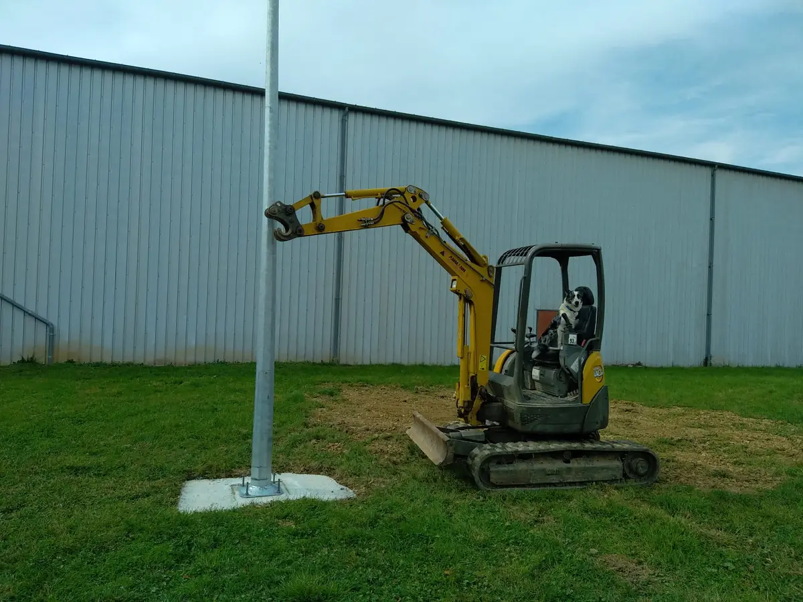
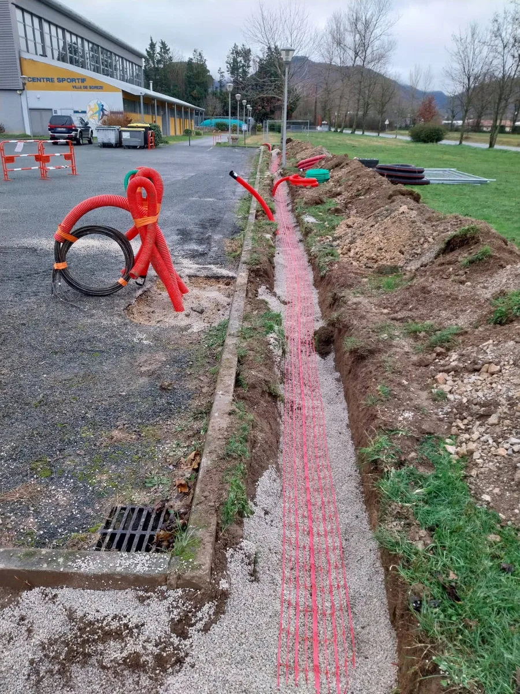

Terrassement de piscine dans le Tarn
Excavation, nivellement, évacuation des terres — tout le terrassement pour votre piscine. Mini-pelles pour accès étroits, garantie décennale.
Le terrassement de piscine, étape par étape
Le terrassement est la première étape de votre projet de piscine — et la plus importante. Un fond mal nivelé, un drainage insuffisant, un accès mal anticipé peuvent compromettre tout le chantier. Avec TMS, votre piscine part sur de bonnes bases.
Ce que nous réalisons pour votre piscine

Excavation du bassin
Creusement aux dimensions exactes du bassin (coque, béton, liner). Profondeur, pentes, escalier romain — chaque forme est respectée au centimètre près selon les plans du pisciniste.

Accès étroit ? On s'adapte
Nos mini-pelles de 1,5 à 3 tonnes passent par des portails de 1,50 m, des allées étroites, des jardins clôturés. Même en centre-ville de Castres ou dans un jardin de lotissement, on accède à votre terrain.

Évacuation et remblai
Les terres excavées sont soit évacuées, soit réutilisées pour niveler le reste du terrain, créer des buttes paysagères ou remblayer. Rien n'est gaspillé.

Drainage et préparation du fond
Sur terrain argileux (fréquent dans le Tarn), le drainage est essentiel pour éviter les poussées d'eau sous la piscine. Nous posons le géotextile, le lit de gravier et le système de drainage.
Pourquoi confier le terrassement de votre piscine à TMS ?
Garantie décennale
Votre terrassement de piscine est couvert par notre garantie décennale et notre RC Pro.
Matériel adapté
Mini-pelles pour accès étroit, pelles moyennes pour gros volumes — on choisit le bon engin.
Coordination pisciniste
On travaille en direct avec votre pisciniste pour respecter les cotes et le planning.
Prêt à creuser votre piscine ?
Envoyez-nous les dimensions et l'accès à votre terrain. Devis gratuit sous 48h.
Ou par email : tms81290@gmail.com
Terrassement de piscine dans tout le Tarn
- Castres
- Labruguière
- Mazamet
- Albi
- Revel
- Graulhet
- Lavaur
- Sorèze